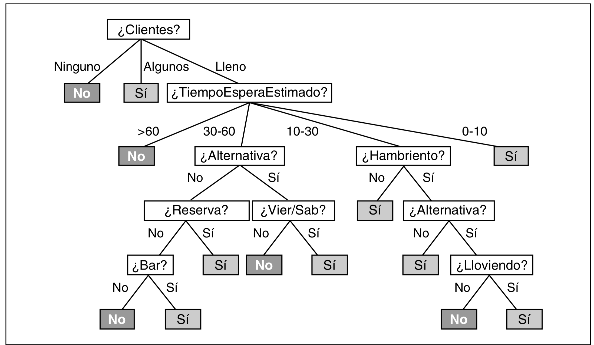
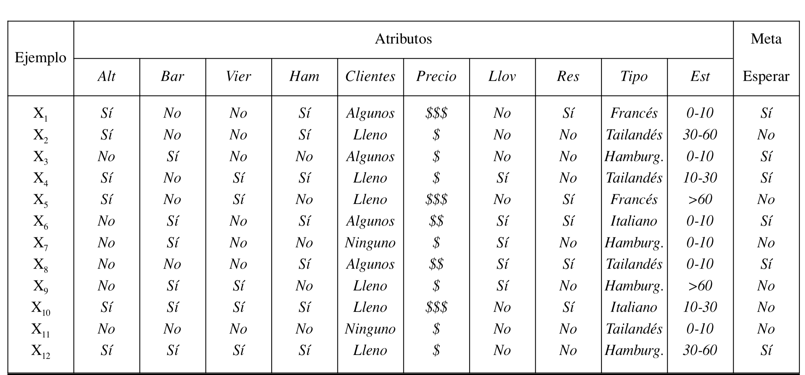
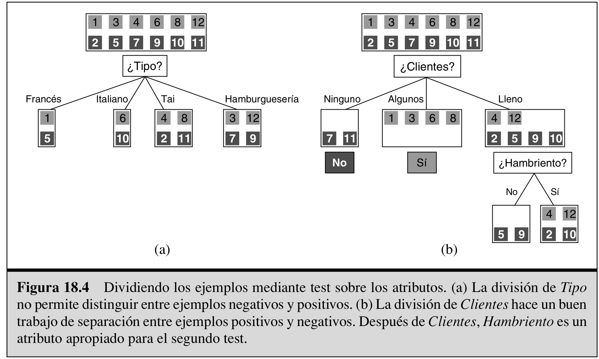
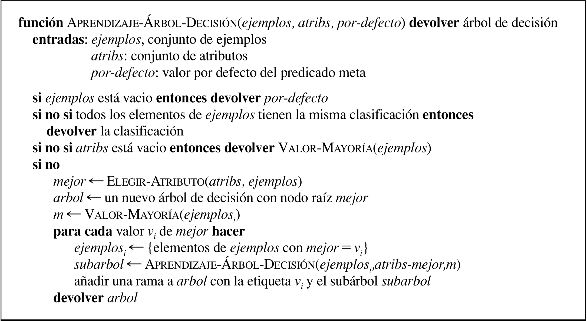
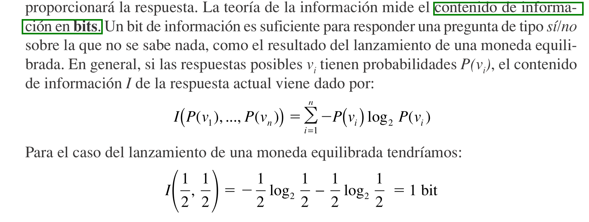
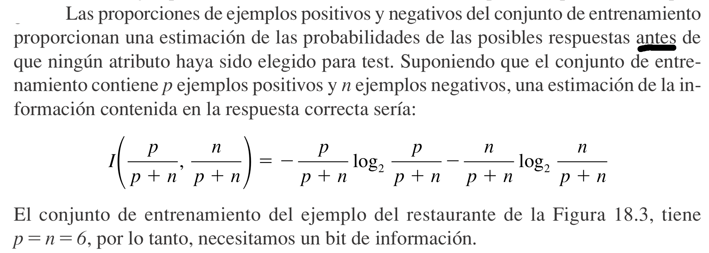
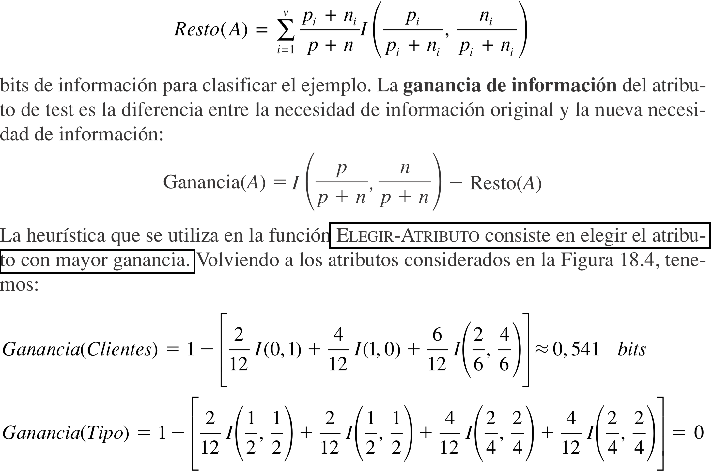

Arboles de decisión: Introducción
Contents
Arboles de decisión: Introducción¶
Un árbol de decisión es un clasificador que toma como entrada una entidad descrita por un conjunto de atributos y devuelve una «decisión». Los atributos de entrada pueden ser discretos o continuos.
Un árbol de decisión aplica una secuencia de tests para poder alcanzar la decisión. Cada nodo interno del árbol corresponde con un test sobre el valor de una de las propiedades, y las ramas que salen del nodo están etiquetadas con los posibles valores de dicha propiedad. Cada nodo hoja del árbol representa el valor que ha de ser devuelto si dicho nodo hoja es alcanzado.
La representación en forma de árboles de decisión es muy natural para los humanos; muchos manuales que explican cómo hacer determinadas tareas (por ejemplo, reparar un coche) están escritos en su totalidad como un árbol de decisión.
{kind=link}
Aprendizaje de Arboles de decisión¶
Aprendizaje basado en árboles de decisión
{kind=link}
La idea básica del algoritmo APRENDIZAJE-ÁRBOL-DECISIÓN es realizar primero el test sobre el atributo más importante. Se considera como «atributo más importante» aquel que clasifica la mayor cantidad de ejemplos. De esta forma, esperamos obtener la clasificación correcta con un número reducido de tests; es decir, que todos los caminos en el árbol sean cortos y así el árbol completo será pequeño.
  {kind=link}
{kind=link}
{kind=link}
import math
def cantidad_info(*ps):
return sum([-p * (0 if p == 0 else math.log2(p)) for p in ps])
No sabemos nada sobre la moneda, necesitamos 1 bit de información para responder la pregunta sobre si saldrá cara o cruz
cantidad_info(1/2, 1/2)
1.0
Sabemos que la moneda está cargada para que salga cara 9 de cada 10 veces. Necesitamos 1 bit de información para responder la pregunta sobre si saldrá cara o cruz
cantidad_info(9/10, 1/10)
0.4689955935892812
Ssabemos que la moneda está cargada para que salga siempre cara,
cantidad_info(1, 0)
0.0
Ganancia de información¶
 {kind=link}
{kind=link}
# si = 6/12, no = 6/12
cantidad_de_info_inicial = cantidad_info(6/12, 6/12)
cantidad_de_info_inicial
1.0
#francés 2 casos;italiano 2 casos;tai 4 casos;hamburguesería 4 casos
info_tipo = 2/12*cantidad_info(1/2, 1/2) + 2/12*cantidad_info(1/2, 1/2) + 4/12*cantidad_info(2/4,2/4) + 4/12*cantidad_info(2/4,2/4)
info_tipo
1.0
#Ganacia tipo
cantidad_de_info_inicial - info_tipo
0.0
#ninguno 2 casos;algunos 4 casos;lleno 6 casos
info_clientes = 2/12*cantidad_info(0, 1) + 4/12*cantidad_info(1, 0) + 6/12*cantidad_info(2/6,4/6)
info_clientes
0.4591479170272448
#Ganacia número de clientes
cantidad_de_info_inicial - info_clientes
0.5408520829727552
#Calcule la ganacia de información para la variable 'hambriento'
info_hambriento =7/12*cantidad_info(5/7, 2/7) + 5/12*cantidad_info(1/5, 4/5)
ganancia_hambriento = cantidad_de_info_inicial - info_hambriento
ganancia_hambriento
0.19570962879973086
{kind=link}